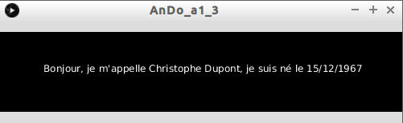
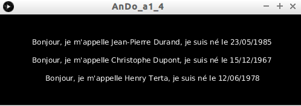

Nous allons en premier lieu étudier le format de données CSV (coma separated values). Les données sont stockées sous forme de table (on parle de "données tabulaires"), en simplifiant, on peut dire que les données sont "rangées" en ligne et en colonne (la première ligne est souvent appelée "entête" . Dans le format CSV, les colonnes sont séparées par des virgules (coma en anglais).
Voici un exemple du contenu d'un fichier CSV:
nom,prenom,date_naissance
Durand,Jean-Pierre,23/05/1985
Dupont,Christophe,15/12/1967
Terta,Henry,12/06/1978
Je pense qu'il est évident pour vous que nous avons ici 3 personnes :
- Jean-Pierre Durand qui est né le 23/05/1985
- Christophe Dupont qui est né le 15/12/1967
- Henry Terta qui est né le 12/06/1978
Les tableurs, tel que "Calc" (Libre Office), sont capables de lire les fichiers au format CSV.
À faire vous-même 1.1
Après avoir téléchargé le fichier ident.csv, ouvrez ce dernier à l'aide d'un tableur.
Vous devriez obtenir ceci :

La classe "Table" fournie différentes méthodes facilitant l'extraction des données au format CSV dans Processing.
Il faut définir une instance de la classe Table qui contiendra les données issues du fichier .csv
Table table;
table = loadTable("ident.csv", "header");
La méthode "loadTable" récupère les données contenues dans le fichier "ident.csv". Le deuxième paramètre de cette méthode ("header"), indique que la première ligne du fichier "ident.csv" correpond à un entête (la première ligne ne contient pas de données, mais le "nom" des différentes colonnes).
La méthode "getRow" renvoie une "ligne" de la table (cette "ligne" est de type "TableRow" (row=ligne)). Cette méthode prend un paramètre, le numéro de la "ligne" à retourner.
TableRow lig;
lig=table.getRow(0);
Dans le cas ci-dessus, la variable "lig" contiendra les données issues de la première "ligne" (hors entête), l'indice des "lignes" commence à zéro, comme pour les tableaux.
Maintenant que nous avons récupéré une "ligne", nous allons pouvoir en extraire les données :
Si les données sont de type "String", il faudra utiliser la méthode "getString", si les données sont de type "int", il faudra utiliser la méthode "getInt"...
Ces méthodes prennent pour paramètre l'intitulé de la colonne (entête).
À faire vous-même 1.2
Saisissez, analysez et testez ce code
Table table;
void setup() {
table = loadTable("ident.csv", "header");
TableRow lig=table.getRow(0);
String nom=lig.getString("nom");
println(nom);
}
À faire vous-même 1.3
Créez un programme permettant d'obtenir ceci (il faudra extraire les données du fichier ident.csv).
Les méthodes "getString", "getInt" peuvent aussi prendre en paramètre, notamment en cas d'absence d'entête, le numéro de colonne (la première colonne a pour indice 0) : dans notre exemple (ident.csv) "getString(1)" est équivalent à un "getString("prenom").
Il est possible de parcourir les lignes à l'aide d'une boucle :
À faire vous-même 1.4
Créez un programme permettant d'obtenir ceci (il faudra extraire les données du fichier ident.csv et obligatoirement utiliser une boucle).
Pour vous aider : la méthode "getRowCount" renvoie le nombre le nombre de lignes d'une table (utilisation : "table.getRowCount()")
Il est possible de trouver sur le web des données beaucoup plus intéressantes à traiter que celles contenues dans le fichier "ident.csv". Par exemple, le site sql.sh, propose un fichier csv contenant des informations sur l'ensemble des communes françaises.
J'ai un peu modifié le fichier proposé (notamment en ajoutant un entête). Vous pouvez télécharger le fichier modifié ici.
À faire vous-même 1.5
Ouvrez le fichier villes.csv à l'aide d'un tableur.
Comme vous pouvez le constater, nous avons 12 colonnes (et 36700 lignes si on ne compte pas l'entête !), voici la signification de ces colonnes :
- dep : numéro de département
- nom : nom de la commune
- cp : code postal
- nb_hab_2010 : nombre d'habitants en 2010
- nb_hab_1999 : nombre d'habitants en 1999
- nb_hab_2012 : nombre d'habitants en 2012 (approximatif)
- dens : densité de la population (habitants par kilomètre carré)
- surf : superficie de la commune en kilomètre carré
- long : longitude
- lat : latitude
- alt_min : altitude minimale de la commune (il manque des données pour certains territoires d'outre-mer)
- alt_max : altitude maximale de la commune (il manque des données pour certains territoires d'outre-mer)
À faire vous-même 1.5
Créez un programme permettant d'afficher toutes les communes dont l'altitude minimum est supérieure à 1500 m
À faire vous-même 1.6
Créez un programme permettant d'afficher toutes les communes (de France métropolitaine) de plus de 5000 habitants (en 2010) ayant une altitude maximale inférieure à 10 m.
Vous trouverez un grand nombre de données, diverses et variées, au format CSV sur le site gouvernemental data.gouv.fr.